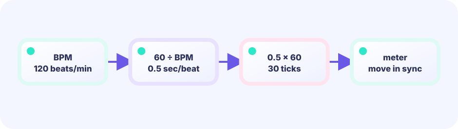
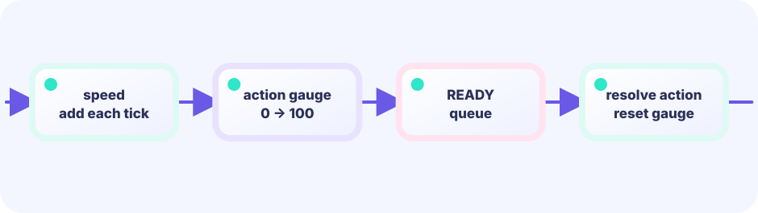

STATE
Advance three gauges together and observe how speed becomes a difference in action count.
★★★★☆ / PLAYABLE
Advance three gauges together and observe how speed becomes a difference in action count.
PLAY FIRST
Advance three gauges together and observe how speed becomes a difference in action count.


DEEP DIVE
Add speed to gauge on every Update. Reset only the actor that reaches full, and faster actors become READY more often in the same real time.
Advance three gauges together and observe how speed becomes a difference in action count.
Add speed to gauge on every Update. Reset only the actor that reaches full, and faster actors become READY more often in the same real time.
Observe how changed values create the next decision.
SYSTEM LAB
Add speed to gauge on every Update. Reset only the actor that reaches full, and faster actors become READY more often in the same real time.
START
THE UPDATE / DRAW BOUNDARY
Read keys and touch, then change positions, HP, gauges, timers, boards, and queues. Rules and decisions live here too.
input → rule → change gameRead the finished game state and place pictures, text, and effects. It never changes game state.
read game → project pixelsFor this lesson, put a new rule in Update (or a pure helper called by Update). Draw only shows the result of that rule.
GO + EBITENGINE
Advance three gauges together and observe how speed becomes a difference in action count.
actor.gauge += actor.speed
if actor.gauge >= maxGauge {
actor.gauge = 0
actor.ready = true
}Add speed to gauge on every Update. Reset only the actor that reaches full, and faster actors become READY more often in the same real time.
Change speed or action timing and compare.
Add one new combat role.
FEEDBACK